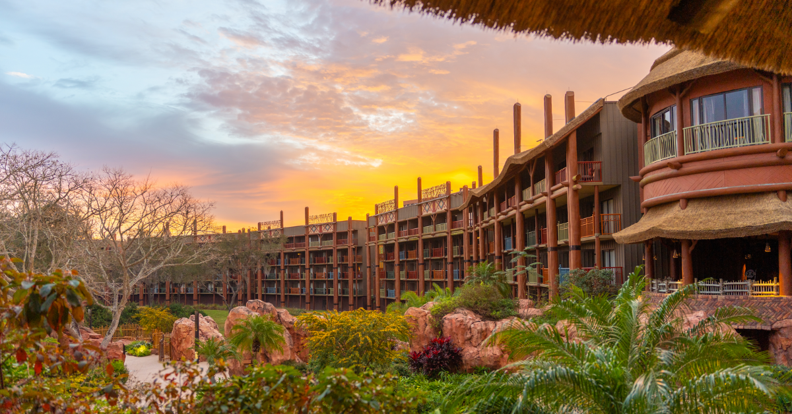

Disney's Animal Kingdom Lodge
Localização: 2901 Osceola Parkway Lake Buena Vista, Florida 32830-8410 (407) 938-3000
Diária: $508,50 USD
Transporte: Ônibus
Categoria: Deluxe
Localização: 2901 Osceola Parkway Lake Buena Vista, Florida 32830-8410 (407) 938-3000
Diária: $508,50 USD
Transporte: Ônibus
Categoria: Deluxe
Localização: 1600 Seven Seas Drive Lake Buena Vista, Florida 32830-8423 (407) 824-2000
Diária: $740,25 USD
Transporte: Ônibus e Transporte marítimo
Categoria: Deluxe
Localização: 4401 Floridian Way Lake Buena Vista, Florida 32830-8451 (407) 824-3000
Diária: $815,63 USD
Transporte: Ônibus e Transporte marítimo
Categoria: Deluxe
Localização: 1114 Cayman Way Lake Buena Vista, Florida 32830-8411 (407) 934-3400
Diária: $310,10 USD
Transporte: Ônibus e Teleférico
Categoria: Moderada
Localização: 1251 Riverside Drive Lake Buena Vista, Florida 32830-8514 (407) 934-6000
Diária: $313,88 USD
Transporte: Ônibus e Transporte marítimo
Categoria: Moderada
Localização: 1001 West Buena Vista Drive Lake Buena Vista, Florida 32830-8403 (407) 939-1000
Diária: $293,63 USD
Transporte: Ônibus
Categoria: Moderada

Localização: 1050 Century Drive Lake Buena Vista, Florida 32830-8433 (407) 938-4000
Diária: $204,75 USD
Transporte: Ônibus e Teleférico
Categoria: Econômica
Localização: 1801 West Buena Vista Drive Lake Buena Vista, Florida 32830-8436 (407) 939-6000
Diária: $152,09 USD
Transporte: Ônibus
Categoria: Econômica
🛏 O complexo Disney é um verdadeiro universo encantado, com uma diversidade de resorts que vão de acomodações econômicas a hotéis luxuosos, todos cuidadosamente temáticos. Cada hotel transporta o visitante para uma experiência única, seja no clima tropical de um resort havaiano, no charme rústico de uma cabana no interior dos Estados Unidos, ou no universo dos filmes clássicos da Disney. Tudo é pensado para manter a magia presente em cada detalhe, do atendimento à decoração.
🎢 A magia se estende para além dos hotéis, nos incríveis parques temáticos do complexo. São diversas opções como o icônico Magic Kingdom, com o Castelo da Cinderela; o Epcot, que mistura tecnologia e cultura mundial; o Hollywood Studios, com atrações de Star Wars e Pixar; além do Animal Kingdom, onde a natureza e a aventura se encontram. Cada parque oferece uma experiência imersiva e diferente, garantindo diversão para todos os estilos e gostos.
🎇🎆Além dos parques e hospedagens, a Disney oferece experiências inesquecíveis para todas as idades. Shows noturnos com fogos de artifício, desfiles com personagens, encontros mágicos e uma gastronomia variada e temática tornam cada momento único. É possível jantar com princesas, experimentar pratos do mundo todo ou simplesmente se emocionar com um espetáculo ao ar livre. Na Disney, cada detalhe é pensado para encantar e criar memórias inesquecíveis para toda a família.